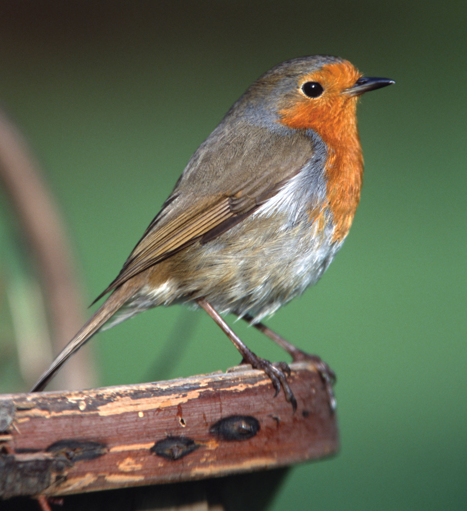

European Robin
Common to fairly common in wooded habitats, gardens, hedges in farmland, and heathland, usually fairly near cover. Hops perkily on the ground, pausing to look around, when often flicks wings and cocks tail. Also feeds by dropping to the ground from low perches, snatching up prey and flying back up to a shady perch. Plumage distinctive, with bright orangey face and breast (easily hidden when facing away); juvenile in summer very different, with bold pale buffy spotting on back and breast.
